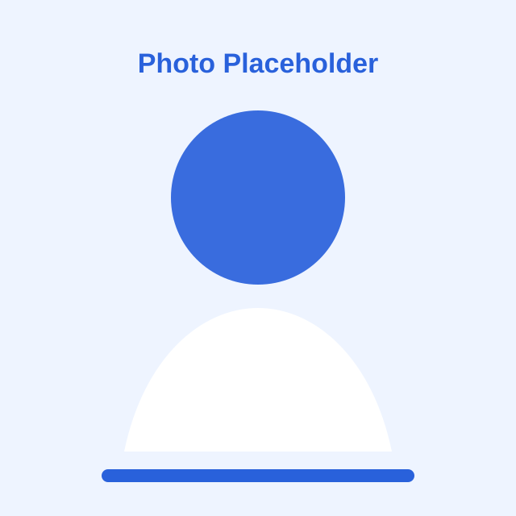
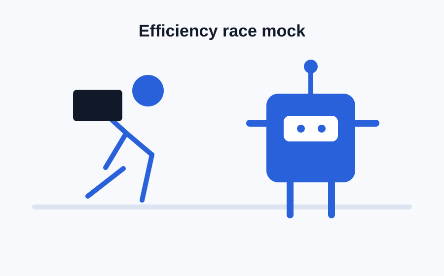
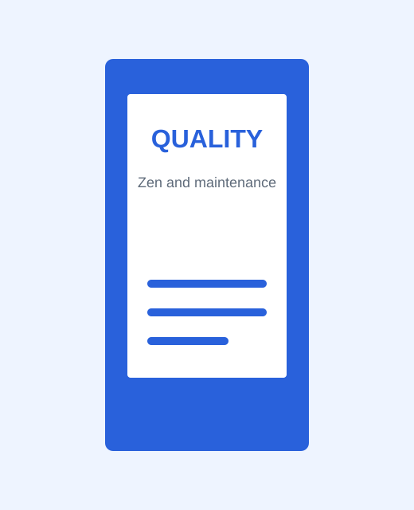
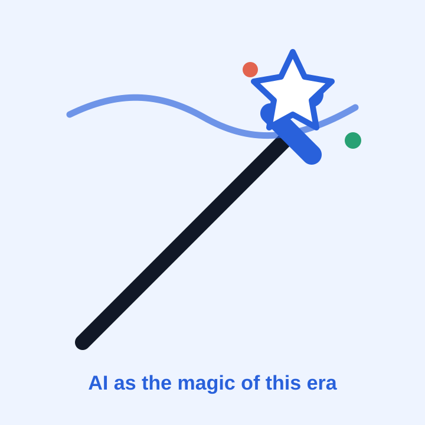

EmpowHER 2026 Demo Day
做时代的魔法师，拒绝被异化
Question
过去几十年，社会教导我们要效率至上。
但现在，AI的效率最高，而且 24 小时不休息。
当AI把能做的都做了，我们的价值是什么？
大家都能用AI做同样的事，我做的东西和别人有什么区别？

Reset
死板、僵硬、焦虑，慢慢变得麻木。
轻盈、享受，开始自在地寻找有意思的AI应用。

Quality
这本书讨论的是：在技术与理性的世界里，人如何通过专注和用心，找回做事的终极价值。
电脑坏了重启 / 找人修，把它当黑盒。
程序报错复制给代理商，只求结果。
但如果你愿意理解原理，并从 Debug 中获得成就感。
良质是主体和客体交融瞬间，迸发出的纯粹体验与火花。
Agency
“专业的事交给专业的人”很多时候只是让我们把生活、判断和好奇心一起外包。
专业边界正在下沉，很多行业的信息差正在被AI抹平。
与其默认“我不会”，不如花15分钟先理解现状。
经验、审美和直觉会变成你区别于别人和AI的底层逻辑。
Closing
每个时代都有自己的魔法。
这个时代的魔法是AI，它会像水一样融入每个人的生活。
作为行业从业者，我们可以更进一步：不只享受魔法，也要理解魔法背后的规律和需求。
观察生活，专注做事，创造有趣的世界。
